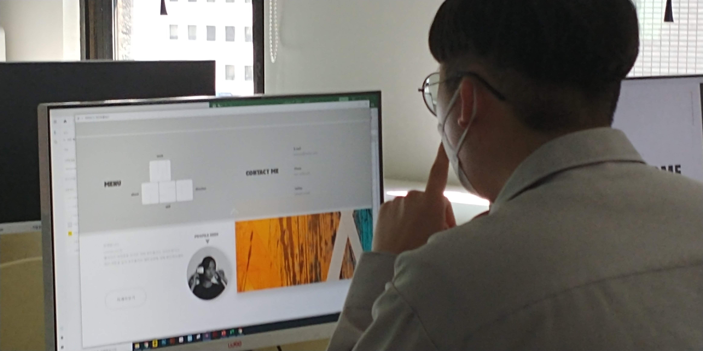

- jimin lee.
- ui/ux designer | lives in south korea, gyeonggi-do
- 반갑습니다!
신입 웹 디자이너 이지민입니다.
더블유에이에스디는 어떻게 만들어졌을까요?
이곳에서 포트폴리오 사이트의 제작과정을 영상과 함께 확인하실 수 있습니다.
my
work
process
how to
make?
마인드 맵
컨셉의 구체화 및 컨텐츠의 다양성을 목적으로 아래의 키워드를 도출했습니다.
#modern#simple#title_wasd#typography카드 소팅
마인드 맵 과정을 통해 추출한 키워드를 항목별로 정리하는 시간을 가졌습니다.
아이디어스케치
개인 웹사이트에 색을 입히고 아이덴디티를 부각시킬 수 있는 컨셉을
손 드로잉으로 기록했습니다.
이전의 과정에서 얻은 타이틀을 기반으로 컨셉을 구체화시켜줄
심볼 픽토그램을 디자인했습니다.
html 구조를 작성하기 전, 페이지 구현을 위한 1차적인 도안을 그렸습니다.
방문자의 워크플로우를 고려하여 컨텐츠를 구성하고
work/about/skill/direction으로 우선순위를 매겨 항목을
정렬했습니다.

사용자테스트
Adobe XD 프로그램으로 구현한 웹사이트 프로토타입에 대해
사용성테스트와 프레젠테이션 시간을 가졌습니다.